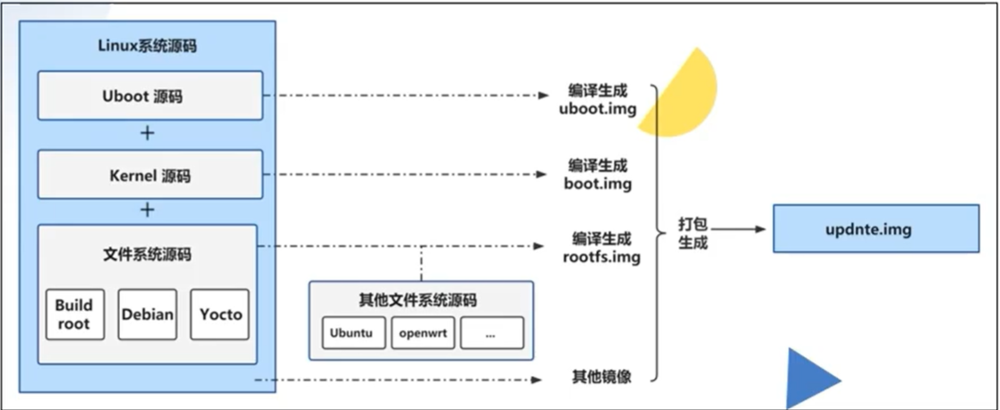
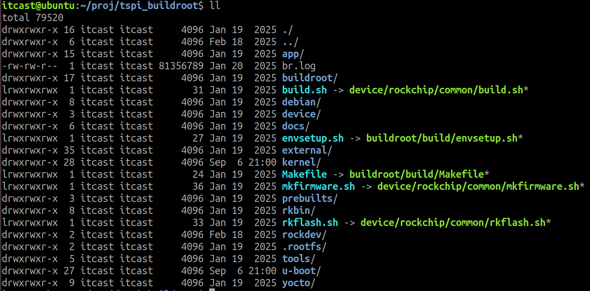

<!DOCTYPE lake>
<p data-lake-id="u76301dc9" id="u76301dc9"><span class="lake-fontsize-11" data-lake-id="u43b9f82c" id="u43b9f82c" style="color: rgb(143, 145, 168)">一个可运行的 Linux 系统通常由 </span><strong><span class="lake-fontsize-12" data-lake-id="ua84820c5" id="ua84820c5" style="color: inherit">引导程序（Bootloader）</span></strong><span class="lake-fontsize-11" data-lake-id="ufd15e1e6" id="ufd15e1e6" style="color: rgb(143, 145, 168)">、</span><strong><span class="lake-fontsize-12" data-lake-id="ueb80baac" id="ueb80baac" style="color: inherit">Linux 内核（Kernel）</span></strong><span class="lake-fontsize-11" data-lake-id="u821f6685" id="u821f6685" style="color: rgb(143, 145, 168)"> 和 </span><strong><span class="lake-fontsize-12" data-lake-id="ub71a7156" id="ub71a7156" style="color: inherit">根文件系统（Root Filesystem）</span></strong><span class="lake-fontsize-11" data-lake-id="u944ee297" id="u944ee297" style="color: rgb(143, 145, 168)"> 三部分组成。 </span></p><p data-lake-id="u8b5130bc" id="u8b5130bc"><span class="lake-fontsize-12" data-lake-id="u84c6b6eb" id="u84c6b6eb" style="color: rgb(44, 44, 54)">其中：</span></p><ul list="u5eda4afe"><li data-lake-id="ubf3d90e4" fid="u0ef517eb" id="ubf3d90e4"><span class="lake-fontsize-12" data-lake-id="u164e3335" id="u164e3335" style="color: rgb(44, 44, 54)">Bootloader 可以是 U-Boot（嵌入式）、GRUB（PC）、LILO、Coreboot 等。</span></li><li data-lake-id="ub40a0e77" fid="u0ef517eb" id="ub40a0e77"><span class="lake-fontsize-12" data-lake-id="u224d1a57" id="u224d1a57" style="color: rgb(44, 44, 54)">Kernel 是 Linux 操作系统的核心。</span></li><li data-lake-id="u74cad5cd" fid="u0ef517eb" id="u74cad5cd"><span class="lake-fontsize-12" data-lake-id="u6031d5f6" id="u6031d5f6" style="color: rgb(44, 44, 54)">RootFS 提供用户空间的运行环境。</span></li></ul><h1 data-lake-id="qcnJm" data-lake-index-type="2" id="qcnJm"><span data-lake-id="u51140eb4" id="u51140eb4" style="color: rgb(17, 24, 39)">SDK包介绍</span></h1><p data-lake-id="u80fb8b35" id="u80fb8b35"><span class="lake-fontsize-12" data-lake-id="ubc87888b" id="ubc87888b" style="color: rgb(44, 44, 54)">开发Linux少不了和uboot, kernel, rootfs打交道。一些低端处理器这些源码往往都是单独给大家提供。</span></p><p data-lake-id="ua4bb750c" id="ua4bb750c"><span class="lake-fontsize-12" data-lake-id="u45a2d8ee" id="u45a2d8ee" style="color: rgb(44, 44, 54)">但是随着处理器性能的提高，软件的依赖也越来越复杂，所以往往这些源码都是以SDK包的形式提供，SDK包里面有uboot, kernel, rootfs以及库文件和其他厂家自己的文件。</span></p><p data-lake-id="ue629234d" id="ue629234d"></p><p data-lake-id="u46555c98" id="u46555c98"><span class="lake-fontsize-12" data-lake-id="ufbccfb0d" id="ufbccfb0d" style="color: rgb(44, 44, 54)">瑞芯微官方的Linux源码里面只有buildroot、debian和yocto这三种文件系统，并没有其他的系统，如Ubuntu，openwrt等等。</span></p><h1 data-lake-id="tLKy1" data-lake-index-type="2" id="tLKy1"><span data-lake-id="uf958e97e" id="uf958e97e">泰山派SDK</span></h1><blockquote data-lake-id="uc0362f6b" id="uc0362f6b"><p data-lake-id="u2d8ffe47" id="u2d8ffe47"><span class="lake-fontsize-12" data-lake-id="uc44a4ce1" id="uc44a4ce1">通过资料中的tspi_linux_sdk_repo_20240131.tar.gz得到</span></p></blockquote><p data-lake-id="u01311c34" id="u01311c34"></p><ul list="u7ef039d6"><li data-lake-id="u70f7b96c" fid="u29364ea2" id="u70f7b96c"><code data-lake-id="uc6dec114" id="uc6dec114"><span class="lake-fontsize-11" data-lake-id="uf12e7ce9" id="uf12e7ce9" style="color: rgb(24, 113, 255); background-color: rgba(142, 150, 170, 0.14)">app</span></code><span class="lake-fontsize-12" data-lake-id="u2c8f9909" id="u2c8f9909" style="color: rgb(60, 60, 67)">： 存放上层应⽤ app，主要是 qcamera/qfm/qplayer/settings 等⼀些应⽤程序。</span></li><li data-lake-id="u025775dc" fid="u29364ea2" id="u025775dc"><code data-lake-id="udc2a159b" id="udc2a159b"><span class="lake-fontsize-11" data-lake-id="u4e7c9788" id="u4e7c9788" style="color: rgb(24, 113, 255); background-color: rgba(142, 150, 170, 0.14)">buildroot</span></code><span class="lake-fontsize-12" data-lake-id="uef8b8588" id="uef8b8588" style="color: rgb(60, 60, 67)">： 基于 buildroot (2018.02-rc3) 开发的根⽂件系统。</span></li><li data-lake-id="uabe6fa7e" fid="u29364ea2" id="uabe6fa7e"><code data-lake-id="ue57b8c3d" id="ue57b8c3d"><span class="lake-fontsize-11" data-lake-id="uebd10250" id="uebd10250" style="color: rgb(24, 113, 255); background-color: rgba(142, 150, 170, 0.14)">debian</span></code><span class="lake-fontsize-12" data-lake-id="ue384df14" id="ue384df14" style="color: rgb(60, 60, 67)">： 基于 debian 10 开发的根⽂件系统，⽀持部分芯⽚。</span></li><li data-lake-id="u86da716d" fid="u29364ea2" id="u86da716d"><code data-lake-id="u95a5bb85" id="u95a5bb85"><span class="lake-fontsize-11" data-lake-id="ua51cc712" id="ua51cc712" style="color: rgb(24, 113, 255); background-color: rgba(142, 150, 170, 0.14)">device/rockchip</span></code><span class="lake-fontsize-12" data-lake-id="u75a336af" id="u75a336af" style="color: rgb(60, 60, 67)">： 存放各芯⽚板级配置和 Parameter ⽂件，以及⼀些编译与打包固件的脚本和预备⽂件。</span></li><li data-lake-id="uea402c74" fid="u29364ea2" id="uea402c74"><code data-lake-id="u59f4e61b" id="u59f4e61b"><span class="lake-fontsize-11" data-lake-id="u58dba24b" id="u58dba24b" style="color: rgb(24, 113, 255); background-color: rgba(142, 150, 170, 0.14)">IMAGE</span></code><span class="lake-fontsize-12" data-lake-id="u0ef216c4" id="u0ef216c4" style="color: rgb(60, 60, 67)">： 存放每次⽣成编译时间、XML、补丁和固件⽬录。</span></li><li data-lake-id="u94f33886" fid="u29364ea2" id="u94f33886"><code data-lake-id="uee80796b" id="uee80796b"><span class="lake-fontsize-11" data-lake-id="u5cdec93e" id="u5cdec93e" style="color: rgb(24, 113, 255); background-color: rgba(142, 150, 170, 0.14)">external</span></code><span class="lake-fontsize-12" data-lake-id="u46de894e" id="u46de894e" style="color: rgb(60, 60, 67)">： 存放第三⽅相关仓库，包括⾳频、视频、⽹络、recovery 等。</span></li><li data-lake-id="u4be5303c" fid="u29364ea2" id="u4be5303c"><code data-lake-id="uae2f27f0" id="uae2f27f0"><span class="lake-fontsize-11" data-lake-id="ud207a50d" id="ud207a50d" style="color: rgb(24, 113, 255); background-color: rgba(142, 150, 170, 0.14)">kernel</span></code><span class="lake-fontsize-12" data-lake-id="u563b2553" id="u563b2553" style="color: rgb(60, 60, 67)">： 存放 kernel 4.4 或 4.19 开发的代码。</span></li><li data-lake-id="u8e216b50" fid="u29364ea2" id="u8e216b50"><code data-lake-id="ucec9d098" id="ucec9d098"><span class="lake-fontsize-11" data-lake-id="u63e730ed" id="u63e730ed" style="color: rgb(24, 113, 255); background-color: rgba(142, 150, 170, 0.14)">prebuilts</span></code><span class="lake-fontsize-12" data-lake-id="u7601bd7d" id="u7601bd7d" style="color: rgb(60, 60, 67)">： 存放交叉编译⼯具链。</span></li><li data-lake-id="ua74b0131" fid="u29364ea2" id="ua74b0131"><code data-lake-id="u96720238" id="u96720238"><span class="lake-fontsize-11" data-lake-id="u6269e3ad" id="u6269e3ad" style="color: rgb(24, 113, 255); background-color: rgba(142, 150, 170, 0.14)">rkbin</span></code><span class="lake-fontsize-12" data-lake-id="u7b894db6" id="u7b894db6" style="color: rgb(60, 60, 67)">： 存放 Rockchip 相关的 Binary 和⼯具。</span></li><li data-lake-id="u7209ace2" fid="u29364ea2" id="u7209ace2"><code data-lake-id="u2e519b91" id="u2e519b91"><span class="lake-fontsize-11" data-lake-id="u592c7697" id="u592c7697" style="color: rgb(24, 113, 255); background-color: rgba(142, 150, 170, 0.14)">rockdev</span></code><span class="lake-fontsize-12" data-lake-id="u00b59174" id="u00b59174" style="color: rgb(60, 60, 67)">： 存放编译输出固件。</span></li><li data-lake-id="u15556615" fid="u29364ea2" id="u15556615"><code data-lake-id="u9b635269" id="u9b635269"><span class="lake-fontsize-11" data-lake-id="u924910f5" id="u924910f5" style="color: rgb(24, 113, 255); background-color: rgba(142, 150, 170, 0.14)">tools</span></code><span class="lake-fontsize-12" data-lake-id="u13345dea" id="u13345dea" style="color: rgb(60, 60, 67)">： 存放 Linux 和 Windows 操作系统环境下常⽤⼯具。</span></li><li data-lake-id="u87b2f3ee" fid="u29364ea2" id="u87b2f3ee"><code data-lake-id="u8130c2a1" id="u8130c2a1"><span class="lake-fontsize-11" data-lake-id="u351edf65" id="u351edf65" style="color: rgb(24, 113, 255); background-color: rgba(142, 150, 170, 0.14)">u-boot</span></code><span class="lake-fontsize-12" data-lake-id="u079dcb0e" id="u079dcb0e" style="color: rgb(60, 60, 67)">： 存放基于 v2017.09 版本进⾏开发的 uboot 代码。</span></li><li data-lake-id="u7c11d23f" fid="u29364ea2" id="u7c11d23f"><code data-lake-id="u19bee324" id="u19bee324"><span class="lake-fontsize-11" data-lake-id="udf6f8373" id="udf6f8373" style="color: rgb(24, 113, 255); background-color: rgba(142, 150, 170, 0.14)">yocto</span></code><span class="lake-fontsize-12" data-lake-id="u067bfc1e" id="u067bfc1e" style="color: rgb(60, 60, 67)">： 基于 yocto gatesgarth 3.2 开发的根⽂件系统，⽀持部分芯⽚。</span></li></ul>